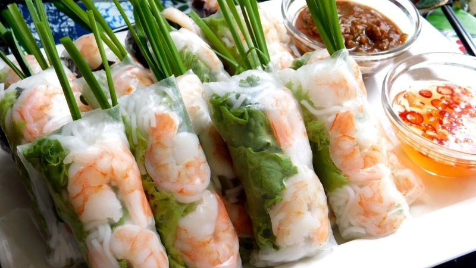
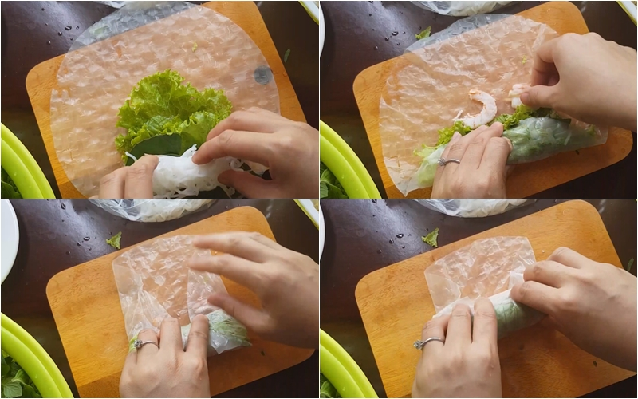
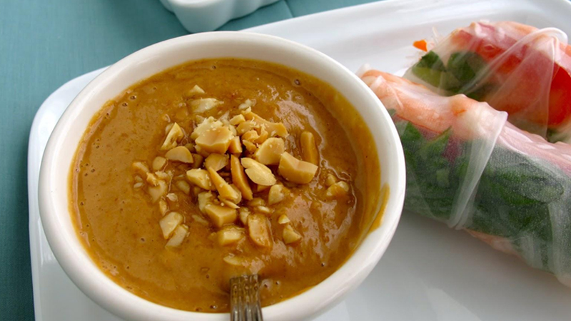

Go Back to homepage
Vietnamese Spring rolls

Description
Vietnamese Spring Rolls or "gỏi cuốn" is a wraped pick-me-up side dish for appitizer
Ingredients
- 1kg pork belly
- 300gr tiger prawns
- 500gr rice Vermicelli
- 1 packet of Vietnamese Rice paper
- lots of greens of your choice (salad, basil, mints,etc)
- shallots, cloves of garlic, Thai chillies as many as you like
- peanut butter
- sugar, salt, pepper, hoisin sauce
Instructions
Prepping
- Wash your green thoroughly
- Boil your pork belly in lightly salted water with 2 bulb of shallots and 1 cloves
of garlic. Remove the scumps as they surfaces. As soon as the water is boil,
continue to maintain boiling for 30m, keeps removing the scumps.
After that cut the pork belly into thin small slices
- While waiting for the pork belly, put on a pot of water till it is boiling,
put the prawn into the water. Wait till it is boiling again, then wait for
1 min before draining
- par-boild the Rice Vermicelli then prepare all of the Ingredients for wrapping
Wrapping
lightly damped the rice paper and warp the preped Ingredients above with the Vermicelli in the middle
wrapping is a skill but the below image might help you to get started

Dipping sauce

- in a hot sauce pan, adding cooking oil, what till the oil is hot then ad minced garlic
- adding 2 tps of hoisin sauce, 1 tps of peanut butter, 5 tps of water, 1 tps of sugar to taste
- reduce the heat, simmer till thicken then pour out into a bowl
- adding chillies as needed